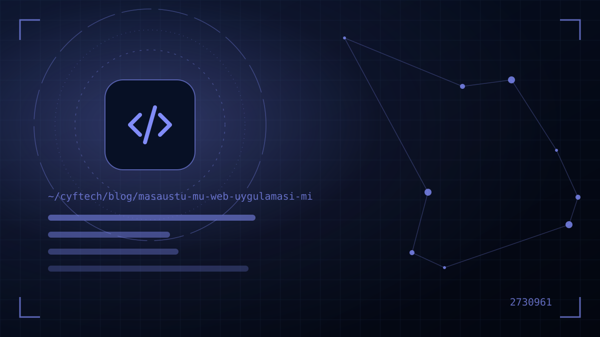

您打算为企业定制一款软件，摆在面前的第一个问题是：桌面应用还是 Web 应用？是安装在收银台电脑上的程序，还是在任何地方都能用浏览器打开的系统？选错了，就意味着多年的低效。
随着云计算和浏览器技术的发展，Web 应用已在许多领域取代了桌面程序。不过，在需要扫码枪、小票打印机、大文件或离线工作的场景中，桌面应用依然强大。而且如今，您也不必只选其中一种。
本文从业务角度比较这两种方式，解释介于两者之间的混合方案（PWA、Electron、Tauri），并介绍我们为什么在自有产品 KATSİS 中同时使用 Web、移动端和 Windows。
桌面应用与 Web 应用的区别
桌面应用是安装在用户电脑上、直接在操作系统上运行的软件。由于土耳其绝大多数台式电脑使用 Windows（据 Statcounter 统计，2026 年约为 85%），在企业中“桌面应用”通常就意味着“Windows 程序”。数据可以保存在本地电脑、办公室内的服务器或云端。
Web 应用则运行在服务器上，用户通过浏览器访问。无需安装，只要一个网址和用户名即可。财务软件的云端版本、CRM 系统和在线管理后台，都是典型的 Web 应用。
此外，网站与 Web 应用也有区别：网站主要用于提供信息，而 Web 应用是用户登录、创建数据并完成工作的系统。本文讨论的是后者。
做选择时，不能只看眼前的需求，还要看三五年之后。今天在一间办公室里由五个人使用的程序，明天可能变成三家分店五十个人以及外勤团队共同使用的系统。在最初的架构决策中就为这种增长留好余地，可以免去日后推倒重写的成本。
桌面应用 vs Web 应用：8 项标准对比
| 标准 | 桌面应用 | Web 应用 |
|---|---|---|
| 安装 | 每台电脑需单独安装 | 无需安装；有浏览器即可 |
| 访问 | 仅限已安装的设备 | 随时随地，任何设备，只要有网络 |
| 离线运行 | 天生擅长 | 有限；借助 PWA 可部分实现 |
| 硬件访问 | 可完全访问打印机、电子秤、读卡器、串口等 | 仅限浏览器允许的范围 |
| 性能 | 直接使用本地资源 | 取决于服务器和网络连接 |
| 更新 | 需要向每台设备分发更新 | 在服务器上更新一次；所有人立即用上新版本 |
| 数据与备份 | 本地数据由用户负责备份 | 集中管理；在服务器端备份 |
| 平台 | 通常只支持一种操作系统 | Windows、macOS、平板、手机都可以 |
表格显示了总体趋势：如果优先考虑可访问性、多用户和易维护，Web 更占优势；如果优先考虑硬件、离线运行和繁重的本地处理，桌面更占优势。
什么情况下 Web 应用是正确选择？
如今，新的业务软件通常默认从 Web 应用起步。在以下情况下，Web 的优势尤为明显：
- 多地点或远程办公：分店、外勤团队和居家办公人员需要实时访问同一份数据。
- 客户或经销商访问：如果需要外部用户登录系统，让他们安装程序是不现实的。
- 业务规则频繁变化：价格、促销或流程的变化需要同时反映给所有人。
- 设备种类繁杂：有的员工用 Windows，有的用 Mac，有的用平板。
- 集中报表：管理层希望在一个界面上查看所有分店的数据。
Web 应用的弱点在于网络连接。一旦断网，工作可能会停滞；因此对于关键流程，需要从一开始就考虑离线场景。另一个问题是安全：对互联网开放的系统必须通过 HTTPS、强身份验证、权限控制和定期更新加以保护。详情请参阅 我们的网站安全指南。
什么情况下桌面应用仍是最佳选择？
在云时代，桌面软件并没有过时。在以下情况下，桌面应用或至少一个桌面组件，仍然是最合适的方案：
- 大量硬件集成：小票和标签打印机、电子秤、扫码枪、钱箱，以及通过串口或 USB 通信的工业设备。
- 必须不间断运行：收银台、生产线或仓库等断网时工作也不能停的地方。
- 繁重的本地处理：大型图片、视频、CAD 文件或大批量数据处理。
- 敏感且必须留在本地的数据：数据不得离开企业网络、与互联网隔离的环境。
- 大量键盘操作：为整天快速录入数据的操作员提供以快捷键为核心、即时响应的界面。
在 Windows 桌面软件开发中，基于 .NET 的 WPF 和 WinUI 等技术成熟且生命周期长。 我们的桌面应用服务 使用这些技术开发需要硬件集成的项目。
介于两者之间：PWA、Electron 与 Tauri
桌面与 Web 之间的界线越来越模糊。有三种混合方案尤为突出：
PWA（渐进式 Web 应用）
这是可以“安装”到电脑或手机上的 Web 应用。它在独立窗口中打开，在桌面上有图标，可以缓存部分数据以实现有限的离线运行，还能获得打开和保存文件等能力。额外成本低；但硬件访问仍受浏览器限制。
Electron
它把用 Web 技术（HTML、CSS、JavaScript）编写的应用，变成内置浏览器引擎的桌面程序。许多流行的桌面应用都采用这种方式。大部分 Web 代码可以复用，并且可以完全访问操作系统；缺点是应用体积和内存占用相对较高。
Tauri
与 Electron 类似；但它不打包浏览器引擎，而是使用操作系统自带的 WebView，后端运行 Rust。结果通常是体积更小、更轻量的应用。其生态虽不及 Electron 丰富，但发展迅速。
问题已不再是“Web 还是桌面”，而是您要为哪类用户、在哪种屏幕上、提供怎样的体验。
真实案例：KATSİS 同时使用 Web、移动端和 Windows
我们的自有产品 KATSİS，正是说明这个问题的答案可以是“两者兼有”的好例子。KATSİS 是一款公寓和小区物业管理软件，集成了物业费与欠款追踪、收支、公告、服务请求、虚拟 POS 和短信模块。由于不同用户的需求差异很大，单一界面无法满足：
- Web 后台：让管理员无需安装即可随时随地访问系统、查看报表。
- iOS 和 Android 应用：让住户关注公告、查看欠款并提交请求；也就是把最常用的操作装进口袋。
- Windows 应用：为在办公桌前处理大量操作的用户，提供充分利用桌面速度与便利的体验。
这一架构的关键在于，三个界面都连接到同一个基础架构和同一份数据。在 Web 后台录入的一笔收款，会同时出现在移动应用和 Windows 应用中。由于业务规则集中在一处，新增功能时逻辑只需编写一次；各个界面只需将这些逻辑适配到各自的屏幕上。有关 KATSİS 及我们其他产品的详情，请访问 我们的项目页面。
如果您正在考虑移动端选用哪种技术， 我们关于原生还是跨平台的文章 可以看作这一决定的延续。
桌面还是 Web？6 个问题的决策指南
针对您的项目回答以下问题。“是”的答案集中在哪一边，就为您指明了方向：
- 问题 1 —用户是否会从不同地点或公司外部访问？如果是，选 Web。
- 问题 2 —断网时工作停滞是否不可接受？如果是，选桌面或支持离线的混合方案。
- 问题 3 —是否需要与打印机、电子秤、读码器等设备持续通信？如果是，选桌面，或 Web + 一个小型桌面辅助服务。
- 问题 4 —用户是否使用不同的操作系统和设备？如果是，选 Web。
- 问题 5 —业务规则是否经常变化，且需要所有人立即使用最新版本？如果是，选 Web。
- 问题 6 —数据是否不得离开企业网络？如果是，选使用本地服务器的桌面应用，或部署在企业内部的 Web 应用。
对许多企业而言，正确的答案是以一个 Web 应用为核心，再为特殊需求配上与之连接的桌面或移动应用。如果您要从零设计这样的系统，我们在 定制软件开发一文中 介绍了整个流程。
- 是否已列出用户群体及其使用的设备？
- 离线运行的需求是否已明确？
- 需要集成的硬件是否已确定？
- 数据存放在哪里是否已决定？
- 更新与分发流程是否已规划？
- 是否评估过将来增加移动端或 Web 端的可能性？
常见问题
Web 应用能在没有网络的情况下运行吗？
传统 Web 应用需要网络连接。而以 PWA 形式开发的 Web 应用可以缓存部分数据，实现有限的离线运行，并在恢复连接后同步数据。如果需要完整、长时间的离线运行，桌面应用是更稳妥的选择。
桌面应用和 Web 应用，哪个更安全？
两者都不是天生更安全。Web 应用对互联网开放，需要强身份验证和定期更新；桌面应用则面临本地数据备份、设备丢失和未更新安装等风险。安全取决于架构和维护。
我能把桌面程序改造成 Web 应用吗？
可以，但这通常意味着重新开发。业务规则和数据结构可以保留，界面和基础架构则需要为 Web 重新设计。在过渡期间，让两套系统并行运行一段时间，并谨慎迁移数据，这一点很重要。
开发 Web 应用比桌面应用更便宜吗？
如果面向多个平台和大量用户，Web 的总成本通常更低，因为一套代码就能在所有设备上运行，也无需分发更新。而对于只在单一操作系统上运行、以硬件为主的业务，桌面应用可能更经济。
Web 应用能在我们自己的服务器上运行吗？
可以。Web 应用既可以托管在云服务器上，也可以部署在贵公司自己的服务器上，仅供内网访问。在数据不得离开企业的情况下，这种模式既保留了 Web 在安装和更新上的便利，又把数据留在公司内部。
用 Electron 开发的应用算桌面应用吗？
算。Electron 应用是安装在电脑上、可以访问操作系统的真正桌面应用；只是其界面用 Web 技术编写。这样便于与 Web 应用共享代码，但体积和内存占用高于原生应用。
结语
桌面应用还是 Web 应用，答案取决于您的用户在哪里、使用什么设备、在什么条件下工作。可访问性和易维护方面 Web 更胜一筹，硬件和不间断运行方面桌面更占优势；而最强大的方案，往往是在统一的基础架构上同时使用两者。我们已在自有产品 KATSİS 中实践了这一思路。如果您想一起为项目确定合适的架构，可以看看我们的 Web 软件 和 桌面应用 服务，或者直接 与我们联系.